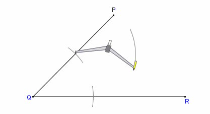

Teaching Geometric Constructions using Math Open Reference
Teaching geometric constructions has always been a challenge. The rules
are easy enough - compass, straightedge, no measuring.
But for the teacher the challenges come quickly. How to actually demonstrate them in class?
How will the students remember the steps when trying it themselves?
What happens when they do the homework?
In the classroom
To demonstrate the constructions in class we have the usual choices:
- Compasses and straightedge on a whiteboard or overhead projector.
- Software such as Geometers Sketchpad (GSP) or GeoGebra.
These have the obvious drawbacks; the vertical drawing surface or overhead projection screen
is awkward and the students cannot take it home.
Using software is OK, but the compass
tool only draws whole circles which, while technically correct, winds
up producing rather confusing images for this task, and does not show the steps involved.
The Math Open Reference website offers a third option. In the chapter devoted to constructions
(here), there are
most of the Euclidean constructions taught in high school.
Each one can be stepped through one step at a time,
or be let to free run all the way through. Each one also has written instructions for those who prefer that.
Using a projector you can show each construction step by step while you discuss
it with the class. The compass actually looks and acts like a compass,
and it can draw partial arcs just the like the real one. The straightedge and pencil looks real also.

Stephen Corcoran, Head of Mathematics at St Stephen's School in Perth Australia
reports after using the construction pages in the classroom:
"The lesson was a huge success. Displaying your construction animations
greatly increased student understanding, motivation and 10x more
efficient. Also they can always visit your site themselves if they
wish."
In the Lab
The next problem arises when the students try to do it themselves. They
have to rely on memory to redo what they saw a few minutes ago in
class. This memory is typically not very good. Not until they have done
it themselves a few times will they really retain it. The ultimate goal
of course is to get to the point where the visual aid is no longer
needed and they can perform the constructions in a test unaided.
Using Math Open Reference, they can bring it up on a computer and
follow along with the animations, pausing between steps. This leads to a
high degree of success and hastens the time when they can do it
unaided.
Some teachers do this in a computer lab setting while they
walk around looking over shoulders to find the students who need some
extra help. Teachers report that this activity is very engaging.
According to Roy Chancellor, a math teacher in Scottsdale Arizona:
"Animated constructions are absolutely indispensable for guiding the
students at their own pace. It would be next to impossible to teach
these constructions in whole-group format. The students were engaged
throughout the lab."
At Home
The third challenge arises when the students are at home. Once again, they have
to recall what they saw in class and try and reconstruct the figures
from memory. If they have trouble with this, the only recourse has been
a written set of instructions, and these instructions are very hard to write -
a bit like trying to describe how to tie shoelaces.
Because the Math Open Reference animations are freely accessible on
the web without any special downloads or software, they can again see the
step-by-step animations and practice at their own pace until they get
it down. They are seeing the exact same animations they saw at school.
Software like GSP is less useful here because:
- The student has probably not purchased it.
- The sketches do not show how they can be
produced using real drawing instruments.
Making it Concrete
Constructions are taught as a fundamental part of a geometry
curriculum, but they have other values. Some geometric concepts can
seem a little abstract to some students. By linking them to physical
constructions, the ideas become more concrete in the student's mind.
Again, Roy Chancellor:
"In my HS geometry class, we're doing a unit on properties of
triangles, such as circumcenter, incenter, centroid, and orthocenter.
After learning various theorems about these special locations, my
students used your construction pages to create each one. After making
the constructions, they used measuring tools to verify each of the
theorems from earlier in the week. It was an excellent way to connect
the book knowledge to something they created."
Conclusion
It might be said that this is just rote "see and do", not real learning.
But there is another view. Once the constructions have been practiced over and over and internalized,
the training wheels can be cast aside.
From that base of confidence, the discussion can be started into the real meaning
of the constructions and the analysis of why they actually work.
John Page is a software designer living in California's Silicon Valley.
He is the author of the free online geometry textbook Math Open Reference.
Send a message to John Page
Other pages about this site
Articles
(C) 2011 Copyright Math Open Reference.
All rights reserved